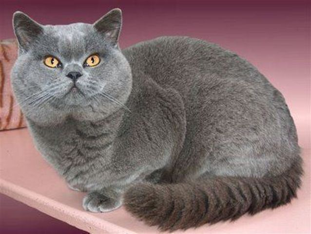

Kucing bulu pendek britania adalah salah satu ras kucing tertua yang nenek moyang dipercayai memiliki hubungan dengan bangsa Romawi yang pernah dahulu menguasai Inggris. Kucing ini adalah kucing berbadan sedang dengan bulu yang pendek. Selain itu, kucing ini juga banyak menjadi ikon.